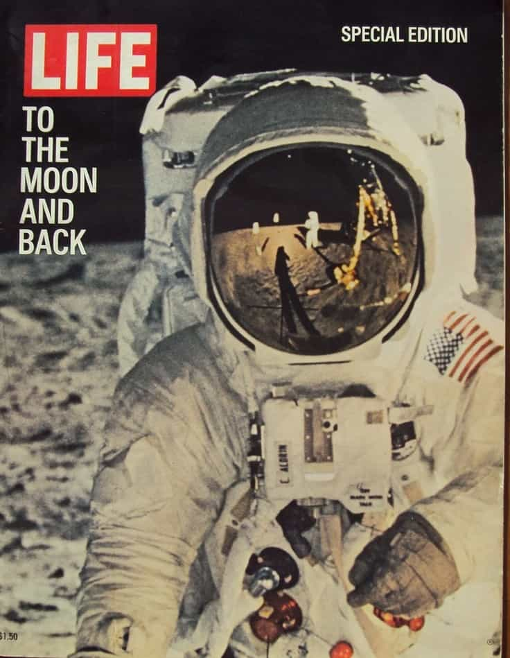

Generations are typically defined as those born during a certain time span and usually sharing certain common experiences, values, and aspirations. Historically, generations have been binned into 18 year intervals: the Greatest Generation (1910-1928), the Silent Generation (1928-1946), Baby Boomers (1946 – 1964), Generation X (1964 – 1982), and the Millennials (1982 – 2000). The start and end points of a generation are often chosen to coincide with major historical events, e.g, the Baby Boomer Generation began with the end of WW2 and ended with the start of the Vietnam War (Gulf of Tonkin), and the end of the Millennial Generation is generally chosen to coincide with the bursting of the dot-com bubble and 9/11.
Pundits are fond of heralding the arrival of the Millennial generation onto the national stage. Every week or so, some Legacy Media columnist or contributor swears the Millennials are on the threshold of seizing the reins of political, economic, and cultural power. However, despite these assurances, there are major indications that the Millennials represent a stillborn generation that will leave behind no lasting legacy.
First, “Millennial” was a very poor moniker for those born between 1982 and 2000. Before “Millennial” stuck, this cohort was referred to as either Generation Y or Echo Boomers, either of which would have been more apropos. The term “Millennial” really should have been reserved for those born after the new millennium, e.g., after 2000.
The oldest Millennials were born during Reagan’s first term and were partying in college when they rang in the new millennium. Moreover, Millennials lived a good amount of their childhood prior to the widespread availability of the internet and nostalgically remember frustratingly slow dial-up. Those born after 2000 really have grown up in a totally different reality, never knowing a world without high speed wireless internet, social media, and smart phones.
Pundits are also fond of emphasizing that the Millennials represent the largest generation (in terms of cohort members). However, that fact belies certain discomfiting realities. Most Millennials are children of Baby Boomers. If Boomers reproduced at replacement level (meaning 2 children per couple), then it stands to reason that they will give rise to a generation at least as large as their own. Many Millennials grew up as only children or with one sibling. Consequently, their situation growing up was one of familial isolation, being spoiled by doting helicopter parents, and a lack of a need to share or compromise.
People often succumb to the logical fallacy of believing all generations will exert equal influence. Whatever one’s view of the Baby Boomer generation, it cannot be denied that they have exerted massive influence on the national culture and did so from a very early age. Even before they were old enough to vote, they were changing history, fighting for Civil Rights and protesting the Vietnam War (“Hey! Hey! LBJ! How many kids did you kill today?”). The Baby Boomer generation has been setting the direction of the country for 50 years.
In the 2016 election, the American people were presented with two candidates, both older Baby Boomers (Trump born 1946 and Hillary born 1947). A Baby Boomer will be at the helm for the next 4-8 years. Assuming younger Baby Boomers will exert similar influence as their older Baby Boomer counterparts, we can expect the end of Baby Boomer influence to come in approximately 25 years, at which time The Baby Boomers will have set the nation’s course for 75 years!
The oldest Millennials are already middle aged. When the Baby Boomer influence is finally over, the Millennials will be 40-60 years old. Historically, a generation peaks early. The Millennials have not made themselves felt to any comparable degree. The Millennials were late to the party and may be early to leave if a subsequent generation is more assertive (and there are indications that non-PC views in general and Alt-Right beliefs in particular are more common among those in the Generation Z cohort) and pushes them off the national stage.
The Baby Boomers had their own sages and prophets trumpeting their arrival on the national stage: Bob Dylan, Simon & Garfunkel, Crosby, Stills, and Nash. Ask yourself: Are there similar generational voices for the Millennials? Lady Gaga? Miley Cyrus? Katy Perry? Are there similar ballads and anthems of the Millennial Generation? What about cinema? The Baby Boomers had movies with counter-culture, anti-authority themes like The Graduate, Easy Rider, 5 Easy Pieces, and Alice’s Restaurant.
What do the Millennials have? Big-budget CGI remakes. A remake of Ghostbusters. A reboot of Jurassic Park. Another installment of Star Wars. Now, think about the heroes and icons of the Millennial generation, those who have had a profound impact on how Millennials live their lives. Bill Gates and Steve Jobs? Both born 1955. Both Baby Boomers. PayPal’s Elon Musk? Born 1971. Barring the creators of Facebook (Mark Zuckerberg) and Snapchat (Evan Spiegal), there are very few Millennials who have influenced other Millennials in any major way.
The Millennials have come of age in an era of globalism and open borders; consequently, the Millennial voice is being muffled though massive immigration from Latin America and Asia. Millennials are being squeezed from both sides: from the bottom (Latin America: poor and uneducated) and from the top (Asia: wealthy and well-educated). The previous generations were marked by exceptional ethnic, cultural, and lingual homogeneity. While whites still constitute a majority of Millennials, the Millennials as a whole are a much more mixed group with large numbers of Hispanics and Asians—groups that were almost non-existent in America when the Baby Boomers were coming of age.
The American economy was also much stronger in earlier generations: Baby Boomers could pay their way through college working summer jobs as a lifeguard or burger flipper. Not anymore. The rise in the cost of tuition has far outstripped the pace of inflation. Additionally, there are many more wealthy people from other nations that are willing to pay the exorbitant tuition at American universities. In the 1960s, countries like India, South Korea, and China were backward and frantically trying to modernize. Now these countries have huge numbers of middle and upper class families eager to send their children to prestigious schools in the West. Back then, American schools were for American students. Now, American schools are for whoever can pay the admission fee.
Millennials have a grin-and-bear-it mindset. While earlier generations would have set up barricades in the streets or taken the out-of-touch elites to the guillotine, Millennials are perhaps best characterized by their seemingly endless ability to absorb one punishment, privation, and humiliation after another. They are seemingly unwilling to stand up for their own interests, not resisting the elites’ efforts to bring in an endless stream of poor Central American migrants, foreign students, foreign professionals on H1B visas, and rich foreign nationals to buy up all the prime real estate.
The Millennial response to being unable to make ends meet? Become a part-time Uber or Lyft driver.

Perhaps as a result of encroaching globalism and a lack of ethnic, cultural, and lingual hegemony, the Millennials seem to lack anything amounting to a collective vision and seem content to adopt a YOLO mindset that spurns long-term thinking and legacy formation in favor of hedonistic consumption and materialistic pursuits.
To whatever extent the Millennials entertain ideas beyond self-indulgent base pursuits, they are derivative, ersatz facsimiles of a previous generation’s aspirations. Landing a man on the Moon was a paradigm-shifting first for earlier generations. Now Millennials are clamoring to get a job at SpaceX. For some reason, they are excited to try to duplicate the accomplishments of an earlier era. Witness the congratulatory tweets that followed Mission Juno’s successful insertion into orbit around Jupiter. Even Google offered up a celebratory Doodle.
No one found it the least bit odd that they were celebrating a duplication of accomplishments of the Pioneer and Voyager missions from 35-45 years ago. Look at all the teams competing for the Google Lunar X Prize. No one finds it odd that they’re trying to duplicate what the Soviet Union accomplished with the Lunokhod 1 rover in 1970! The Armenian engineer Alexander Kemurdzhian, born a hundred years ago, worked on planetary rovers over half a century ago! A combination of woefully poor history education and a lack of formal master-apprentice relationships to facilitate the transfer of knowledge from the previous generation to the next has left the Millennials in a state of total ignorance, not knowing what’s been done before and what hasn’t.
Regardless of one’s opinion of the Baby Boomers’ politics, it can’t be denied that they aged fairly well. The same cannot be said of Millennials, the oldest of whom are now in their mid-30s and the youngest of whom are now graduating high school. It is more common than not to encounter a Millennial male who appears prematurely aged with a receding hairline, prematurely graying hair, or is even completely bald. The number of oral cancers among young men is also rising dramatically. We can expect the Millennial generation with their hedonistic lifestyle to be decimated by HPV-related cancers.
When you watch footage of the 1967 Monterey Pop Music Festival, the 1969 Woodstock Festival, and life on hippie communes, you’re struck by the number of babies and young children. You see women breastfeeding their babies. You see parents playing with their young children. At least one child was born at Woodstock and who knows how many were conceived there. What’s on the cover of Led Zeppelin’s Houses of the Holy album? Naked children.
Think you’ll ever see a parent bringing a baby or child to a Kanye West or Miley Cyrus concert? It’s not because they’re overly protective parents afraid the content is unsuitable. After all, Woodstock is infamous for its unabashed drug use, nudity, and profanity. It’s because those who attend these concerts don’t have children. They are childless.
A good number of hippies—while spurning a lot of traditional things—still opted to have children and have them at a young age. The same cannot be said for Millennials. For the first time in history, people are opting to remain childless. This is unprecedented. People continued to reproduce even under the most adverse conditions: during the Ice Age with prowling saber tooth tigers, during the Bolshevik reign of terror, during World War Two with the Red Army drawing ever closer. In a time of unparalleled abundance and amazing safety nets, people have convinced themselves that the world is too challenging and foreboding to bring a child into.
Despite frequent claims to the contrary, the Millennials will ultimately merit but a footnote in the annals of history. There will be no grand epitaph on their generational tombstone.
Read More: 16-Year-Old Girl Portrays Post-Millennials As A Hopeless Generation